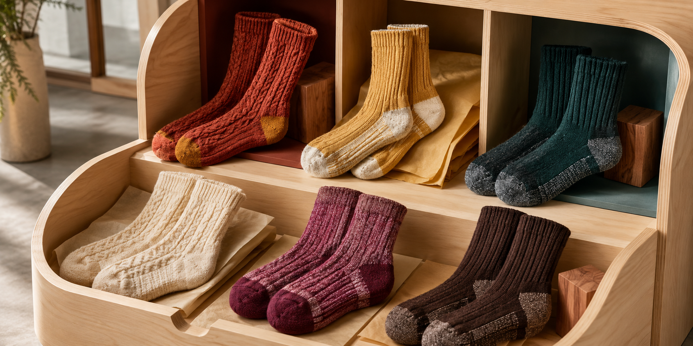

COMFORT METHOD / 01
Warmth with
breathing room.
A practical method for matching material, construction, fit and care to a real setting.
FIVE COMFORT QUESTIONS
Look at the whole combination.
- 01
Where?
Indoor, outdoor, in footwear or in bed changes the warmth and grip required.
- 02
How long?
A short cold walk and a full workday ask different things of moisture and pressure.
- 03
Which shoe?
Thickness must leave enough internal volume for toes and circulation.
- 04
Which knit?
Density, stretch, seam and cushion placement influence the complete feel.
- 05
How cared for?
Care labels preserve the tested fibre and construction better than generic rules.

COMFORT ARCHIVE
Compare after wear.
Record setting, footwear, duration, temperature impression, moisture and pressure points before choosing the next pair.
Browse profiles ↗